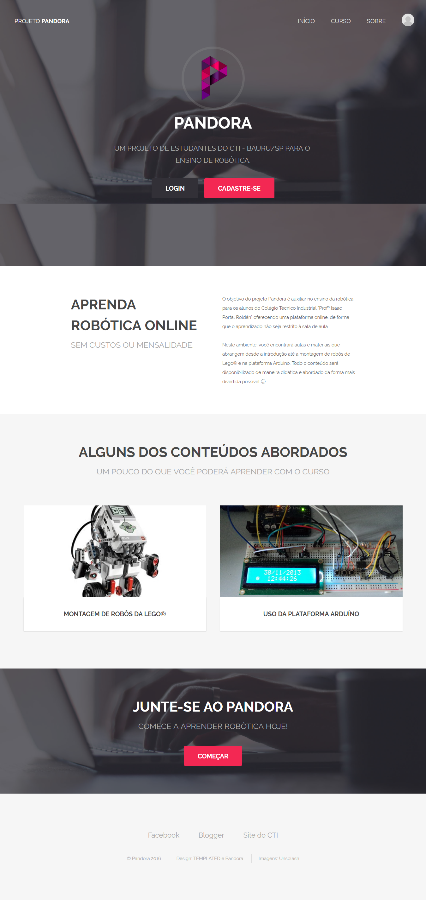

Home Hobbies Vida Acadêmica Tania Sanai Shimabukuro - Vida AcadêmicaTania possui técnico em informática no Colégio Técnico Industrial "Prof. Isaac Portal Roldán" (CTI), se formou em 2016 juntamente com o ensino médio. 
Ela participou, durante o mesmo período, de duas iniciações científicas - Pibic Jr. Entre 2014 e 2015, pesquisou com o Professor Doutor José Rodrigues sobre o Ensino de Empreendedorismo em Escolas Públicas. Já entre 2015 e 2016, pesquisou sobre o Ensino de Robótica (Lego MindStorms) e ajudou na criação de materiais para ensino dessa ferramenta à crianças e iniciantes no assunto. Tal pesquisa foi realizada com a ajuda da Professora Doutora Kátia Lívia Zambon. 
O segundo projeto de iniciação científica foi a inspiração para seu Trabalho de Conclusão de Curso do ensino técnico, no qual foi criado uma plataforma para o ensino de robótica online, com sistema para cadastro de aulas, turmas, notas e alunos. O professor, como administrador do sistema, pode realizar todos esses cadastros e também acompanhar o desenvolvimento dos alunos no curso.  Voltar ao topo da página |